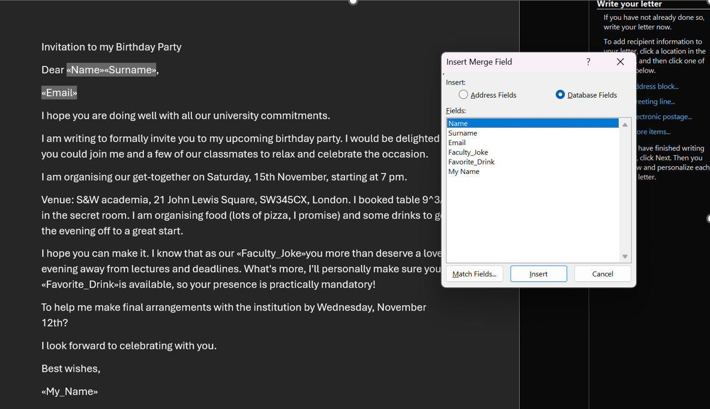
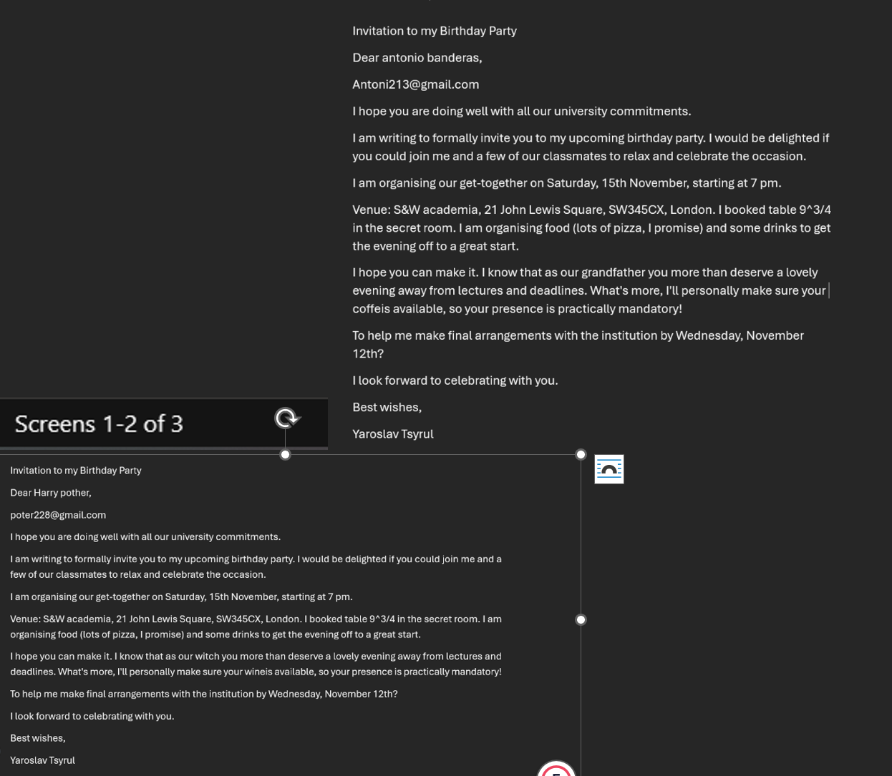
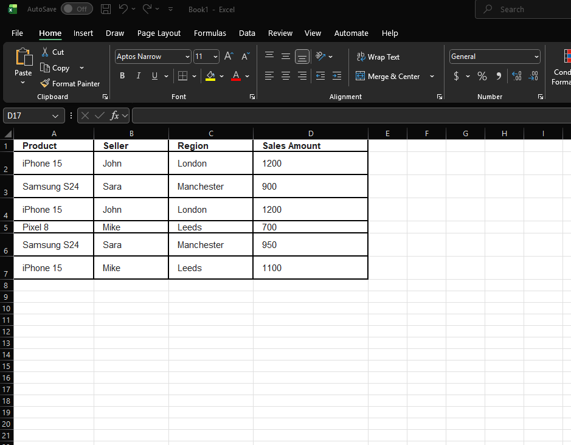
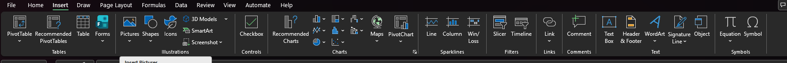
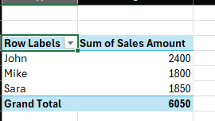

<section>
  <div>
    <div class="task-card1">
      <div class="card-header" onclick="toggleCard(this)">
        <h1>Task 3: Office Applications</h1>
        <button class="collapse-btn">−</button>
      </div>
      <div class="card-content">
        <h3>a. Analysis of office software solutions</h3>
        <p><strong>Microsoft Word:</strong> The standard tool for word processing. Academic research emphasises that word processing skills are a fundamental requirement for digital literacy in the workplace <a href="#ref4" class="ref-link">[4]</a>. Limitations include formatting issues with complex layouts compared to publishing systems <a href="#ref5" class="ref-link">[5]</a>.</p>
        <p><strong>Microsoft Excel:</strong> Critical for financial modelling and data analysis. Spreadsheets remain the dominant tool for management accounting <a href="#ref6" class="ref-link">[6]</a>. However, manual formula entry carries a high probability of "human error" <a href="#ref7" class="ref-link">[7]</a>.</p>
        <p><strong>Microsoft PowerPoint:</strong> The main tool for visual communication. It has changed the culture of business meetings <a href="#ref8" class="ref-link">[8]</a>. A limitation is the risk of "PowerPoint death effect" due to cognitive overload <a href="#ref8" class="ref-link">[8]</a>.</p>
        <p><strong>Microsoft Access:</strong> A relational database management system (RDBMS) designed to structure large amounts of information. It ensures data integrity but is less suitable for large corporations compared to server-based SQL solutions <a href="#ref9" class="ref-link">[9]</a>.</p>
      </div>
    </div>

    <div class="task-card1">
      <div class="card-header" onclick="toggleCard(this)">
        <h2>b. Mail merge and Pivot Table in MS Excel (Screenshots)</h2>
        <button class="collapse-btn">−</button>
      </div>
      <div class="card-content">
        <p><strong>Mail Merge Process:</strong></p>
        <p>Below is the visual demonstration of the Mail Merge process used to generate personalised invitations. Click images to open full size.</p>

        <div class="refworks-gallery" style="justify-content: center; margin-bottom: 30px;">
            <figure>
                <a href="images/mail_merge_1.png" data-caption="Step 1: Preparing the recipient list in Excel and drafting the letter in Word.">
                    
                </a>
                <figcaption>Step 1: Data Source</figcaption>
            </figure>
            <figure>
                <a href="images/mail_merge_2.png" data-caption="Step 2: Inserting merge fields into the document.">
                    
                </a>
                <figcaption>Step 2: Insert Fields</figcaption>
            </figure>
            <figure>
                <a href="images/mail_merge_3.png" data-caption="Step 3: Previewing the results to ensure accuracy.">
                    
                </a>
                <figcaption>Step 3: Preview Results</figcaption>
            </figure>
            <figure>
                <a href="images/mail_merge_4.png" data-caption="Step 4: Final merged documents ready for printing or sending.">
                    
                </a>
                <figcaption>Step 4: Final Output</figcaption>
            </figure>
        </div>

        <p><strong>Pivot Table:</strong></p>
        <div class="refworks-gallery" style="justify-content: center; margin-bottom: 30px;">
            <figure>
                <a href="images/pivot_1.png" data-caption="Step 1: Preparing the initial raw data set with columns for Product, Seller, Region, and Sales Amount.">
                    
                </a>
                <figcaption>Step 1: Raw Data</figcaption>
            </figure>
            <figure>
                <a href="images/pivot_2.png" data-caption="Step 2: Selecting the 'Insert' tab and choosing 'PivotTable' to start the analysis process.">
                    
                </a>
                <figcaption>Step 2: Insert Pivot</figcaption>
            </figure>
            <figure>
                <a href="images/pivot_3.png" data-caption="Step 3: The final Pivot Table summarising sales amounts by seller, showing John as the top performer.">
                    
                </a>
                <figcaption>Step 3: Final Analysis</figcaption>
            </figure>
        </div>

        <ul>
            <li><strong>Step 1:</strong> Prepared initial data set (Raw Data).</li>
            <li><strong>Step 2:</strong> Selected "Insert > PivotTable".</li>
            <li><strong>Step 3:</strong> Dragged "Seller" to Rows and "Sales Amount" to Values.</li>
        </ul>

        <p><strong>Result and Business Application:</strong><br>
        The analysis shows that John generated the most revenue (£2400). In a real-world business environment, managers use pivot tables to monitor key performance indicators (KPIs) and make data-driven decisions.</p>
      </div>
    </div>

    <div class="task-card1">
      <div class="card-header" onclick="toggleCard(this)">
        <h2>References</h2>
        <button class="collapse-btn">−</button>
      </div>
      <div class="card-content">
        <p id="ref4">[4] M. C. Murray and J. Pérez, “Unraveling the digital literacy paradox...,” <em>Issues in Informing Science and Information Technology</em>, vol. 11, pp. 85-100, 2014.</p>
        <p id="ref5">[5] G. B. Shelly and M. E. Vermaat, <em>Discovering Computers 2011: Living in a Digital World</em>, Boston, MA: Cengage Learning, 2010.</p>
        <p id="ref6">[6] M. Spraakman et al., “Employers’ perceptions of information technology competency requirements...,” <em>Accounting Education</em>, vol. 24, no. 5, pp. 403-422, 2015.</p>
        <p id="ref7">[7] S. G. Powell et al., “A critical review of the literature on spreadsheet errors,” <em>Decision Support Systems</em>, vol. 46, no. 1, pp. 128-138, 2008.</p>
        <p id="ref8">[8] R. A. Berk, “Research on PowerPoint: From basic features to multimedia instructional strategies,” <em>International Journal of Technology in Teaching and Learning</em>, vol. 7, no. 1, pp. 24-35, 2011.</p>
        <p id="ref9">[9] C. Coronel and S. Morris, <em>Database Systems: Design, Implementation, & Management</em>, 13th ed., Boston, MA: Cengage Learning, 2018.</p>
      </div>
    </div>
  </div>
</section>